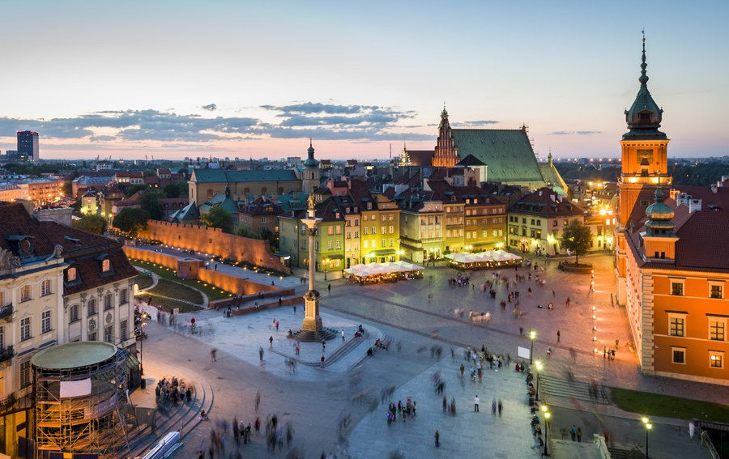

|
Polónia , é um país da Europa Central que tem fronteiras comuns com a Alemanha a oeste; com a República Checa e a Eslováquia ao sul; com a Ucrânia e a Bielorrússia a leste; com o Mar Báltico, o Oblast de Kaliningrado (um exclave russo) e a Lituânia ao norte. A área total da nação é 312 679 quilômetros quadrados,o que a torna o 69º maior país do mundo e o 9º maior da Europa. Com uma população de mais de 38,5 milhões de pessoas,a Polônia é o34º país mais populoso do mundo, o sexto membro mais populoso da União Europeia (UE) e o Estado pós-comunista mais populoso da UE. A Polônia é um Estado unitário dividido em 16 voivodias (subdivisões administrativas). Muitos historiadores traçam o estabelecimento do Estado polonês em 966, quando Mieszko I,governante de um território mais ou menos com a mesma extensão que o da atual Polônia, se converteu aocristianismo. O Reino da Polônia foi fundado em 1025 e em 1569 cimentou uma associação política de longa data com o Grão-Ducado da Lituânia, assinando a União de Lublin, que acabou por formar aComunidade Polaco-Lituana. A Comunidade gradualmente deixou de existir nos anos 1772-1795, quando o território polaco foi dividido entre o Reino da Prússia, o Império Russo e a Áustria. A Polônia recuperou sua independência (como a Segunda República Polonesa), no final da Primeira Guerra Mundial, em 1918.
 |